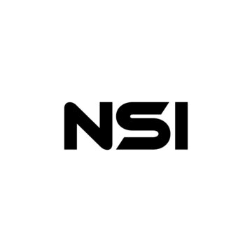
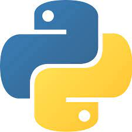

1 : presentation general
La nsi est une spécialité de première et de terminale qui existe depuis 2020, elle est la continuité de la snt de seconde, en nsi nous apprenons les bases de la
programation afin de pouvoir réaliser des projets comme vus plus tôt, nous avons un total de 4h par semaine en première et 6h en terminale. Elle est destinée à tous
les élèves qui sont curieux et qui sont intéressés par l’informatique et les mathématiques. Sans surprise, cette spécialité vous permettra de vous orienter vers l’industrie du numérique.
Les possibilités de poursuite d’études sont diversifiées et le marché de l’emploi dans cette branche est en pleine croissance. Cette spécialité est présente dans le lycée Augustin-thierry de Blois et elle est enseigné par deux professeurs
Mr.Brisson et Mr.Tremulot.

cliquez ici pour en savoir plus
2 : HTML
HTML signifie « HyperText Markup Language » qu'on peut traduire par « langage de balises pour l'hypertexte ». Il est utilisé afin de créer et de représenter le contenu
d'une page web et sa structure. D'autres technologies sont utilisées avec HTML pour décrire la présentation d'une page (CSS) et ses fonctionnalités interactives (JavaScript).
HTML n'est pas un langage de programmation. C'est un langage de balises qui définit la structure de votre contenu. HTML se compose d'une série d'éléments, utilisés pour entourer,
ou envelopper, les diverses parties du contenu pour les faire apparaître ou agir d'une certaine façon. En nsi nous découvrons ce langage sans approfondir (nous utilisons des feuilles car nous ne connaissons pas toutes les balises).

cliquez ici pour en savoir plus
3 : PYTHON
python est le langage de programmation que nous utilisons le plus en nsi, développé par Guido Van Rossum au début des années 1980,
le Python est un langage de programmation caractérisé par sa polyvalence : il est utilisé pour le développement web, l’IA, le machine learning,
les systèmes d’exploitation, le développement d’applications mobiles, les jeux vidéo et bien d’autres, pour apprendre ce langage nous avons réalisé
des projets sur divers sujets ( par exemple : le trie de liste ou des conversions en différentes bases ), ce language est celui qui se rapproche le plus du langage
humain contrairement à l'assembleur qui lui se rapproche plus de la machine ( nous avons un peu travaillé dessus, pour le découvrir ).

cliquez ici pour en savoir plus